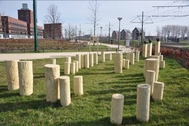
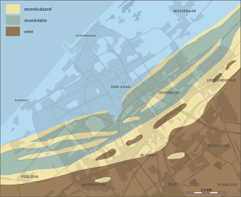

Chapter 6 Den Haag, mijn stad - korte geschiedenis van Den Haag
6.1 Van boerenhof tot Binnenhof
knitr::include_graphics("media/image1.jpeg", dpi = 30)
De oudste “Hagenaars” waren boeren. Ze woonden in wat nu de nieuwste wijk van Den Haag is, Ypenburg. Deze paaltjes zijn geplaatst op de plekken waar archeologen in de bodem verkleuringen hebben gevonden. Zo krijgen we een idee van de grootte van hun woning. Bij de “boerderij” staan drie bronzen beelden van de eerste boeren.
knitr::include_graphics("media/image2.png", dpi = 30)
De zee geeft en de zee neemt. 6000 jaar geleden lag bijna heel Den Haag nog in zee. De kust lag bij Ypenburg. Pas 1000 jaar geleden lag de kust waar die nu nog steeds ligt.
In het Museon is een expositie ingericht over de oudste bewoners van Den Haag. De reconstructies van de vroege Ypenburgers zijn gemaakt door Maja d’Hollosy.
De eerste Hagenaars waren Ypenburgers
5800 jaar geleden tot 0: Prehistorie van Den Haag
Rond 6000 jaar geleden was er nog geen stad achter de duinen. Bijna alles van Den Haag lag onder het zoute water van de Noordzee. De kust liep langs Rijswijk, Voorburg en Leidschendam. Het gebied van de nieuwe wijk Ypenburg lag aan het strand. In de duinen woonde een groepje mensen. Deze mensen waren boeren die ook jaagden en visten. Ze verbouwden graan en hielden koeien en varkens. Ze hadden ook honden. Ze gebruikten gereedschappen zoals de bijl en ze jaagden met pijl en boog. Ook maakten ze zich mooi met kralenkettingen. En als ze stierven, werden ze begraven op één plaats. Het waren mensen als u en ik. Ze leefden honderden jaren op hetzelfde duin. Hoog en droog. Vaders, moeders en kinderen, families, jong en oud. Welke taal ze spraken, weten we niet. Ook hun namen kennen we niet. En ook niet welke religie ze hadden. Maar we weten wel ongeveer hoe ze eruit zagen. Drie schedels hebben een gezicht gekregen. Op de plek waar ze gevonden zijn, zijn hun hoofden in brons te zien. Kijk maar in het plantsoen bij Vuursteen in de wijk Ypenburg.
In Leidschendam achter het oude centrum hebben archeologen een stuk van het verdwenen Kanaal van Corbulo gevonden en hersteld. De brug is een verkleinde replica van de brug over de Rijn bij Koblenz die in het jaar 55 is gebouwd door Julius Caesar.
Gnaius Domitius Corbulo was een Romeinse veldheer die in het jaar 47 naar ons gebied kwam om het te verdedigen tegen de barbaren. Hij liet zijn mannen natuurlijke watertjes met elkaar verbinden. Zo ontstond een 35 kilometer lang kanaal tussen de Maas en de Rijn die toen veel noordelijker liep.
Op deze plek in het Wateringse Veld aan het Oosteinde stonden vier Romeinse mijlpalen. Vanaf het Oosteinde liep de weg naar Forum Hadriani, een Romeinse stad aan de Vliet op de plaats van de huidige gemeente Voorburg.
Den Haag, kolonie van de Romeinen 0 tot 400: Romeinse tijd
Wat er in deze regio gebeurde tot 2000 jaar geleden weten we niet. Er zijn altijd wel boeren geweest. De boeren hadden geen schrift. De Romeinen wel. De Romeinse keizer Julius Caesar veroverde heel Europa tot de rivier de Rijn. In ons gebied langs de kust woonden de Cananefaten. Het waren boeren die bevriend waren met de Romeinen. De jonge mannen deden dienst in hun legers. De belangrijkste stad in dit gebied heette Forum Hadriani, de marktplaats van keizer Hadrianus. Het lag aan het Kanaal van Corbulo, de voorloper van het kanaal de Vliet. Dit Romeinse kanaal liep van de Maas naar de Oude Rijn. De Rijn liep toen anders dan tegenwoordig. De Oude Rijn liep vanaf Utrecht via Leiden en bereikte bij Katwijk de Noordzee. In een plantsoen achter zorgcentrum Schoorwijck in Leidschendam is nog een stukje van het kanaal van Corbulo te zien. Van de Maas liep ook een Romeinse weg naar Forum Hadriani. Verschillende Romeinse wegen liepen door Den Haag en de regio. Aan de Scheveningseweg en op Ockenburg stonden Romeinse wachtposten. In het Wateringse Veld zijn vier Romeinse mijlpalen gevonden. Ze stonden bijna zes kilometer van de stad aan de Vliet vandaan. Na 270 is Forum Hadriani verlaten. De ruïnes liggen nu onder een park in het landgoed Arentsburg in Voorburg. De vermelding van de Cananefaten op de mijlpalen in Wateringse Veld is het laatste dat we van deze bewoners uit het kustgebied horen. In 406 trokken de Romeinen voorgoed uit Germanië weg.
Ridderzaal/ Rolzaal
De graven van Holland woonden eerst in Loosduinen. Daar is rond 1220 een nonnenklooster gebouwd. In 1574 is dit klooster afgebroken, maar de Abdijkerk staat er nog steeds. Dit is dus het oudste gebouw van Den Haag.
In Den Haag daar woont een graaf En zijn zoon heet Jantje. Als je vraagt waar woont je pa, dan wijst hij met zijn handje, met zijn vingertje, met zijn duim, op zijn hoed draagt hij een pluim, aan zijn arm een mandje. Dag mijn lieve Jantje.
Dit is een beroemd Nederlands kinderliedje, maar wie is Jantje? Antwoord: de zoon van Floris V, de graaf die waarschijnlijk de Ridderzaal liet bouwen. Floris werd vermoord in 1296. Zijn zoon die Jan heette was pas twaalf jaar. Ook voor hem liep het verhaal niet goed af. Drie jaar later stierf de nieuwe graaf. Het beeld is van Ivo Coljé en is geplaatst in 1976.
In het Haagse stadswapen staat een ooievaar en dat al vijfhonderd jaar. Deze grote vogel is het symbool van Den Haag geworden. Elk jaar migreert hij tussen Afrika en Nederland. Vroeger waren er veel ooievaars in Den Haag. Vooral bij de vismarkt stonden ze graag. De oudst bekende afbeelding van de ooievaar in het Haagse wapen staat op de grote luidklok in de toren van de Grote Kerk: De klok stamt uit 1541. Eenzelfde wapen komt voor op een schilderij van de Hofvijver met zijn directe omgeving uit 1553, dat nu in het Haags Historisch Museum hangt.
Het allereerste begin van Den Haag lag in Loosduinen
1200-1500: Het hof en de haag van de graven
De geschiedenis van Den Haag begint eigenlijk in Loosduinen. Hier hadden de graven van Holland een woning. In de duinen en op het veen woonden boeren en vissers. Het landschap bestond uit veel bos en was prima voor de jacht. Daarom kwamen de graven van Holland hier graag. Rond 1230 liet graaf Floris IV een huis bouwen op een duin. Dit huis lag langs de weg van Loosduinen naar Leiden. In 1248 werd de zoon van de graaf Willem II gekroond. Hij was rooms-koning van het Duitse rijk. Nu hij een belangrijke status had, liet hij bij dit huis een echt paleis bouwen. Dit was de Rolzaal. Later liet zijn zoon graaf Floris V de Ridderzaal bouwen. Met een kapel erbij was het Binnenhof geboren. Het dorp kreeg de naam Die Haghe. Haag betekent omheinde ruimte of jachtgebied. Het was de haag van de graaf, vandaar de naam: des Graven Hage, ’s Gravenhage. Floris V kwam graag in Den Haag. Het hof groeide snel. Ook het dorp bij het hof groeide. De graven hadden veel werk voor boeren, bakkers en timmerlieden. De edellieden woonden hoog en droog op het zand van de oude duinen, de strandwallen. De dorpelingen hadden hun huizen op het veen, de natte grond. Nu nog steeds is het verschil tussen zand en veen goed te zien. Het oude stadhuis bijvoorbeeld ligt hoog op de strandwal. De straten van de armeren liggen lager op het veen tussen de strandwallen. Binnenhof en buitenhof
1500-1700
Gravure Zeilwagen van Stevin
Kaart van Haag uit 1616 Rond 1600 had Den Haag nog geen stadsrechten en was eigenlijk een dorp. De Italiaanse reisschrijver Lodovico Guicciardini noemde Den Haag het mooiste en rijkste dorp van Europa. Hij vond het Voorhout met zijn schelpenpad en rijen lindebomen prachtig. Hagenaars vonden het heerlijk om hier te wandelen en te converseren. En dat vinden ze nog steeds.
Gevelsteen Raamstraat 47
Simon Stevin (1548-1620), de eerste “moderne” wetenschapper, woonde in de Raamstraat. Net als vele anderen uit de Zuidelijke Nederlanden (nu België) migreerde Simon Stevin naar de Republiek. Zijn motto was: Wonder en is geen wonder. Dat wil zeggen: als je een wonder goed bestudeert, dan begrijp je hoe het is ontstaan. Wonderen bestaan niet. Hij was een multitalent in de wetenschap (wiskunde en natuurkunde) en techniek. Hij heeft veel Nederlandse woorden bedacht, zoals wiskunde (voor mathematica), wijsbegeerte (voor filosofie), evenwijdig (voor parallel) en hij heeft de zeilwagen uitgevonden. Deze zeilboot op wielen reed in 1602 in twee uur naar Petten met een spectaculaire snelheid van veertig kilometer per uur. Het was een bijzondere rit. In de zeilwagen zaten onder meer Prins Maurits, de zoon en opvolger van Willem van Oranje en de vijftienjarige jurist Hugo de Groot die 24 gedichten over het wonder van de zeilwagen schreef.
Den Haag regeringsstad
1500 – 1600: Het begin van de Republiek
Stadhouder Willem van Oranje (1533-1584) zei tegen de Staten-Generaal dat niemand mag heersen over het geweten, het geloof en de religie van mensen. Ook de Spaanse koning Filips II niet die over de Nederlanden heerste. Er kwam een tachtigjarige oorlog met Spanje die duurde tot 1648. De Staten-Generaal maakte zich los van Spanje en Nederland werd een republiek. De staat heette de Republiek der Zeven Verenigde Nederlanden. Vanaf 1578 was Den Haag de regeringsstad van de Republiek. En dat is Den Haag nog steeds. Prins Willem van Oranje nam de plaats in van de koning. Daarom heeft hij als bijnaam de Vader van het Vaderland. Hij heeft twee standbeelden in Den Haag. Voor het paleis op het Noordeinde zit hij op een paard en kijkt hij naar het koninklijk paleis. Op het Plein in het centrum van Den Haag staat hij naast zijn trouwe hond. Hij kijkt naar Delft waar hij woonde en in 1584 werd vermoord. In de periode van de Republiek kwamen veel andersdenkenden naar Den Haag. Hier konden ze relatief vrij leven, denken en werken. Voor het land was het prima, want deze mensen namen veel kennis mee.
Zeestraat Vroeger
Scheveningseweg (nu) De Zeestraat heet nu Scheveningseweg. Dit was het begin van de straat naar Scheveningen. Aan de rechterkant staat het vroegere tolhuis.
Catshuis Zorgvliet heet nu het Catshuis en is de woning van de minister-president. Het is oorspronkelijk het buitenhuis van Jacob Cats (1577-1660). Net als Constantijn Huygens was Cats naast staatsman (raadspensionaris) ook dichter. Zijn gedichten waren eeuwenlang zo populair dat bijna iedere Nederlander wel een exemplaar van gedichten in huis had. Zorgvliet is een woordgrap: een vlucht voor de zorgen (van alledag).
Borstbeeld Constantijn Huygens in de Scheveningse bosjes.
Vader en zoon Huygens, twee genieën De Huygens familie was een bijzondere Haagse familie. Vader Huygens, zijn voornaam was Constantijn (1596-1687), was de secretaris van drie Oranje prinsen: Frederik Hendrik, Willem II en Willem III. Hij was een enorm veelzijdig mens: dichter, filosoof, schilder, componist, musicus, linguïst, architect en tuinarchitect en nog veel meer. Het beroemdste kind van Constantijn was Christiaan (1629-1695). Deze wetenschapper was een meester in de wiskunde, natuurkunde en sterrenkunde. Christiaan was de uitvinder van het slingeruurwerk. Met zijn eigen gemaakte telescoop ontdekte hij de ringen van Saturnus en de maan Titan. Met zijn theorie over het licht als golf was hij de wetenschap eeuwen vooruit.
Veel statige buitenhuizen van rijke Hagenaars staan langs het kanaal de Vliet dat opnieuw is gegraven in de twaalfde eeuw. Het vierkante huis is Hofwijck. Constantijn Huygens ontwierp zijn eigen huis in de stad en ook dit buitenhuis. Hofwijck is een woordgrap: ontsnapping van het hof.
Scheveningen en de Zeestraat
Scheveningen en Den Haag zijn altijd met elkaar verbonden geweest. Scheveningen was al in de middeleeuwen een vissersdorp. Tussen het dorp en Den Haag was een breed en woest duinlandschap. Het vissersleven was niet makkelijk. De zee geeft en de zee neemt, zeggen de vissers. Veel vissers verdronken in zee als het stormde. Hun families hadden dan geen inkomsten. In 1653 had Constantijn Huygens, de secretaris van de stadhouder, een briljant idee: Er moet een geplaveide weg door de duinen komen. Daarmee zouden de “arme Scheveninger Slaven” sneller op de Haagse markt zijn met hun vis. Ook zag hij in dat het plan goed was voor Den Haag. Toeristen van over de hele wereld zouden dit wonder willen zien. Maar de bestuurders van Den Haag vonden het plan veel te ambitieus. Pas tien jaar later bedachten ze dat zo’n weg ook handig was voor militairen, als er een aanval zou komen uit zee. Op 5 december 1665, het was Sinterklaasavond, is de weg geopend. Huygens noemde de eerste “snelweg” van Europa de Zeestraat. Hij schreef er een lang gedicht over. Nu heet de straat de Scheveningseweg. Nog steeds even mooi als toen. Maar wel veel drukker.
Gevangenpoort
De Haagse kermis bestaat al sinds de veertiende eeuw.
Spinoza De Republiek trok in de Gouden Eeuw veel migranten aan uit intolerante naties. De ouders van Baruch de Spinoza (1632-1677) waren joodse kooplieden die uit Portugal waren gevlucht. Baruch bracht zijn jeugd door in de Amsterdamse joodse gemeente, maar zijn ideeën waren al vroeg zo revolutionair dat de filosoof uit de gemeente werd gestoten. Hij heeft in Rijnsburg en Voorburg gewoond voordat hij naar Den Haag kwam. Eerst woonde hij aan de Stille Veerkade en later aan de Paviljoensgracht. Spinoza verdiende zijn geld met het slijpen van lenzen. Zijn ideeën formuleerde hij in zijn meesterwerk De Ethica dat zo revolutionair was dat het pas na zijn dood kon worden gepubliceerd. Net als Willem van Oranje, Hugo de Groot, Johan van Oldenbarnevelt, Constantijn en Christiaan Huygens, Johan en Cornelis de Witt geloofde Spinoza dat iedereen gelijk is en de vrijheid moet krijgen om te geloven, te denken en te zeggen wat hij of zij wil. Omdat de samenleving niet zo tolerant was, moest hij oppassen. Vandaar dat op zijn zegelring het woord Caute stond. Dat latijnse woord staat ook op zijn monument: Pas op!
Het rampjaar 1672
1670-1700: Het einde van de Gouden Eeuw
Het jaar 1672 was een rampjaar voor de Republiek, een absoluut dieptepunt. De staat werd door alle buurlanden aangevallen. Het was oorlog en de Hagenaars verloren hun vertrouwen in de Staten-Generaal en in de Raadspensionaris Johan de Witt. Zijn broer Cornelis de Witt werd verdacht van een complot tegen prins Willem III van Oranje (1650-1702). Hij werd gevangen gehouden in de Gevangenpoort, maar hij was onschuldig. Het volk dacht dat hij wel schuldig was en stormde naar binnen. Johan was op bezoek bij zijn broer. Ze grepen de broers en sleepten hen naar buiten. Ze lynchten de broers en hingen de lijken aan het schavot. Daarna werd Willem III legeraanvoerder en later ook stadhouder. Door zijn militaire en diplomatieke optreden werd de vijand verslagen. In 1677 trouwde hij met zijn zestienjarige nichtje Maria II Stuart van het Engelse koningshuis. In 1689 werden Willem en Maria gekroond tot koning en koningin van Engeland. Vijf jaar later overleed Maria Stuart aan de pokken. Willem stierf in 1702 na de val van zijn paard. Na het rampjaar 1672 kwamen veel migranten naar Den Haag. Arme joden uit Polen en Duitsland vestigden zich rond de Nieuwe Kerk en bouwden een synagoge aan de Voldersgracht. Uit het katholieke Frankrijk vluchtten veel protestantse Hugenoten naar Den Haag. De welvaart, rijkdom en macht werden minder en de Gouden Eeuw in de Nederlanden liep ten einde.
1899: op het bordes van Huis ten Bosch staan de leden van de eerste internationale vredesconferentie.
Deelnemers aan de eerste Vredesconferentie vroegen de filantroop Andrew Carnegie of hij geld wilde geven voor de bouw van een tempel voor de vrede. Dit Vredespaleis, voltooid in 1913, werd een sprookjesachtig gebouw met grote, mooi versierde rechtszalen en prachtige tuinen. Een symbool van het grootse ideaal van wereldvrede.
Vrede in Den Haag 1899- nu: De praktijk van internationaal recht
Den Haag staat bekend als de internationale hoofdstad van recht en vrede. Al meer dan honderd jaar zijn hier belangrijke, internationale organisaties: Den Haag is de thuisbasis van het Internationaal Gerechtshof, het Permanente Hof van Arbitrage en de Haagse Academie voor Internationaal Recht. Alle drie zijn ondergebracht in een statig gebouw, het Vredespaleis aan het Carnegieplein. Hoe is dat zo gekomen? In 1899 kwamen meer dan honderd mensen uit 26 regeringen samen in Paleis Huis ten Bosch in Den Haag. Het initiatief kwam van tsaar Nicolaas II en koningin Wilhelmina was de gastvrouw. Van over de hele wereld kwamen ze hier om afspraken te maken over bewapening, oorlogswetten en arbitrage. Tijdens deze Eerste Internationale Vredesconferentie werd besloten een Permanent Hof van Arbitrage op te richten. Dit hof zet zich in voor de vreedzame oplossing van meningsverschillen tussen landen. Ook al twijfelden verschillende deelnemers, toch werd de Eerste Internationale Vredesconferentie een succes. In 1907 werd een tweede grote conferentie georganiseerd, weer in Den Haag. Beide conferenties hebben veel betekend voor de ontwikkeling van internationaal recht en de wereldvrede. En ze hebben Den Haag internationale instellingen opgeleverd. Ook minder lang geleden kwamen er nog nieuwe organisaties bij: 1993: het Joegoslaviëtribunaal 1997: de Organisatie voor het Verbod op Chemische Wapens, 2002: het Internationaal Strafhof in 2002. Eurojust en Europol hebben hier hun hoofdkwartier.
Het hoofdkwartier van de Verenigde Naties is in New York. Het Internationaal Gerechtshof van de Verenigde Naties is in het Haagse Vredespaleis.
Den Haag, de hele wereld in een stad
Sigarettenfabriek Laurens
Midden in de Binckhorst ligt de sigarettenfabriek van Edouard Laurens. De fabriek, bekend van Caballero en Lucky Strike, werd geopend in 1953 en gesloten in 1995. Veel Hagenaars hebben er hun vakantiegeld verdiend toen ze nog scholier waren. Ze stonden aan de lopende band. Deze scholieren maakten hier kennis met “gastarbeiders”, vaak Turken en Joegoslaven. Nu is de Caballerofabriek een bedrijfsverzamelgebouw voor ICT- en multimediabedrijven.
Mobarak moskee Oostduinlaan
Den Haag heeft de langste islamitische traditie van Nederland. Vooral uit Nederlands-Indië kwamen hier islamitische studenten en dienstboden. De Ahmadiyya-beweging (afkomstig uit India en Pakistan) liet in 1955 de Mobarak Moskee aan de Oostduinlaan bouwen. Dit is de oudste moskee in Nederland. Sindsdien zijn er veel meer moskeeën bijgekomen. In 1987 waren er zeven moskeeën, nu zijn het er bijna veertig.
Sri Krishna Tempel Met ongeveer 45.000 mensen heeft Den Haag de grootste Hindostaanse gemeenschap in Europa. Ze komen voornamelijk uit Suriname. In Den Haag zijn er verschillende tempels waar ze hun geloof, het Hindoeïsme, kunnen uitoefenen. Dit is de Sri Krishna Dhaam hindoetempel.
Gastarbeiders, ex-pats en vluchtelingen 1945-nu: Komen en gaan
In de jaren vijftig emigreerden veel Nederlanders naar Australië, Nieuw Zeeland en Canada. Maar er kwamen ook veel buitenlanders naar Nederland. Voor Den Haag is dat heel normaal. Want Den Haag heeft veel ambassades en internationale bedrijven als de Shell. Er zijn hier daarom veel diplomaten en expats. Deze mensen blijven hier meestal maar een paar jaar. In de eerste helft van de eeuw waren de meeste immigranten Duitsers. Maar er kwamen ook Oost-Europeanen, Spanjaarden, Italianen en Chinezen. In de jaren voor de oorlog zijn veel joodse families uit Duitsland gevlucht. Na de Tweede Wereldoorlog kwamen vooral mensen uit Indonesië naar Den Haag. Na 1960, toen de industrie weer begon te bloeien, waren veel arbeiders nodig. Veel van hen kwamen uit het Middellandse Zeegebied: uit Griekenland en Portugal, maar vooral uit Turkije en Marokko. Ze werden in het begin “gastarbeiders” genoemd. Eerst kwamen de arbeiders alleen en later volgden hun families. Hun kinderen en kleinkinderen wonen en werken en studeren in Den Haag. Oude wijken zoals Schilderswijk en Transvaal, maar ook de naoorlogse wijken in Escamp veranderden daardoor van kleur. Na de onafhankelijkheid van Suriname in 1975 kwamen vooral Surinaamse Hindostanen naar Den Haag. Ook vluchtelingen uit onveilige landen vonden hun weg naar Nederland. Al deze nieuwe Hagenaars hebben de stad veranderd, haar kleur gegeven en van Den Haag een bruisende internationale stad gemaakt. Den Haag is een stad waar de hele wereld zich thuis voelt. En als je je in Den Haag thuis voelt, dan ben je Hagenaar.
Vragen Den Haag mijn stad
Vragen over de teksten uit het boek Den Haag, mijn stad van Ruud Hisgen
Let op: als je hoofdstuk 5 van het Intermediateboek maakt, hoef je de teksten over Den Haag en de vragen erbij niet te doen.
Probeer de volgende vragen te beantwoorden: 1. Waarom is Ypenburg zowel het oudste stuk Den Haag als de nieuwste wijk? 2. Wat zochten de Romeinen in Nederland? 3. Waarom hebben de Romeinen het kanaal de Vliet gegraven? 4. Wat betekent de naam ‘s-Gravenhage of Die Haghe of Den Haag? 5. Waarom emigreerden zoveel Nederlanders in de jaren vijftig naar Amerika of Australië? 6. Hoe noemen we ’gastarbeiders’ nu? 7. Wat betekent het als je op het zand woont en wat als je uit het veen komt? 8. Waarom zijn er zoveel mensen uit Indonesië in Den Haag en hoe zie je dat? 9. Wat is het verschil tussen een Hagenaar en een Hagenees? 10. Waarom heet het Westland ook wel De Glazen Stad?